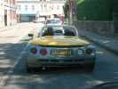
Sur la route d'Outreau, le vendredi, une chaleur caniculaire. Le spider Renault n'était pas une solution totale, à voir le conducteur remettre son serre-tête quand il roulait au soleil, et l'enlever à l'ombre... Mais le soir, un gros orage, une grosse pluie, et la température a heureusement chuté de 7 à 8 degrés.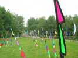
A l'entrée du Parc du Mont Soleil, le champ de bannières de Dominique nous accueille. Il y a des jeunes idiots qui en ont volé ou jeté dans les arbres, mais il en reste quand même pas mal...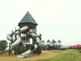
En haut de la colline, un toboggan multi-pistes aux allures médiévalo-modernes !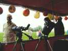
Et des stands, plein de stands, depuis la bouffe des friteries, jusqu'à l'astronomie.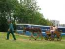
Pour monter le matériel, la ville avait prévu des camions, rassurez-vous, l'âne n'est là que pour promener les enfants !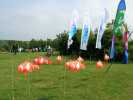
Beaucoup de J.....s du V..t aussi, ceux de Bruno Tondelier, de Joel, de Fernando, de François, de Roger, j'y reviendrai, et d'autres. Admirez ce banc de poissons de corail oranges... !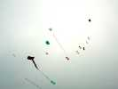
Le ciel est resté assez couvert, mais cela n'a pas empêché les cervolistes de mettre leurs réalisations en l'air, malgré un vent certes fort mais aussi très turbulent.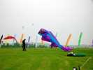
Fabien avait sa petite raie, ce beau poisson, des nounours, une pieuvre, un mégabyte et j'en passe.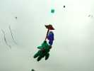
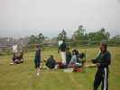
Il y avait aussi un grand championnat de combattants mené par Ludo, avec beaucoup de participants indiens... venant pour la plupart de Hollande ! Un combattant de chaque côté, au milieu l'arbitre. Les cerfs-volants partaient dans les faubourgs, en bas...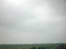
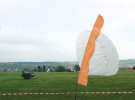
Avec le vent, les essais de parachute pour la traction étaient couronnés d'un plein succès...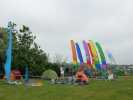
Les suisses avaient installé un camp sur la montagne, on se serait cru à Vercorin...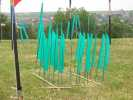
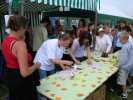
Dans les stands, un atelier pour enfants a eu beaucoup de succès. Les cvs volent super, mais il y a eu beaucoup de papier déchiré avant le soir...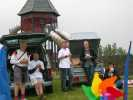
Midi, la pause, friterie au choix offerte par l'organisation...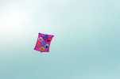
Et c'est reparti, Gaston a réussi à trouver le réglage de son cerf-volant (au millimètre près, il dit), après 2 week-ends de recherche...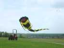
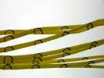
La pieuvre volait toute seule...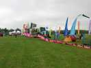
Olivier range sa banderole, devant le camp des Gwenn Ha Du...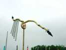
Bon, revenons aux JdV... Roger Walkenburgh était là (et madame), avec ses girouettes souvent sonores, d'une finition époustouflante.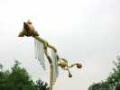
A base de branches tordues et ramifiées, mais polies, vernies, agrémentées de boules, de pointes, etc...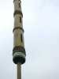
Même ses grands bambous-flûtes sont hyper-soignés, pour ne pas se fendre, mais aussi pour être plus décoratifs !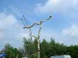
Il y a même des assemblages, les branches normales étant trop simples, sans doute !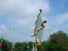
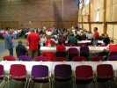
Le samedi soir, repas-soirée dans la Salle des Sports... Même monsieur le Maire restera jusqu'à la fermeture !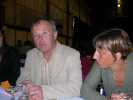
Les G0 étaient là aussi , Jean-Louis et Catherine entre autres...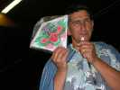
Tous les participants avaient droit à de petits cadeaux, breloque et train de cerfs-volants indoor ! En plus il y a eu tirage de je ne sais combien de lots de la loterie gratuite...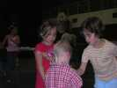
Les enfants se sont bien amusés sur la piste !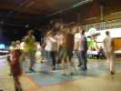
Les grands aussi, après le repas !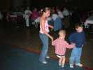
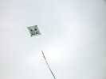
Le lendemain, Emmanuel sort ses chats... Ici un carré-chat...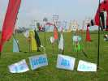
Ensuite un jardin aux chats... ou plutôt de chats, non ?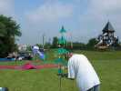
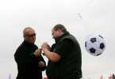
L'accrochage d'une mini-turbine sur un gros cerf-volant n'est pas si facile !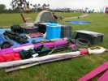
Damien Debril est venu avec une profusion de matériels !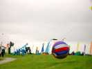
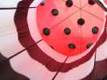
Bon, je continue dans les photos pas comme d'habitude...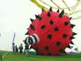
La solution, facile, surtout que c'est la ligne en dessous : c'était l'intérieur du Fugu icosaédrique. Les enfants sont ravis de jouer dessous et avec !...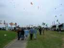
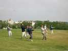
Pour honorer les visiteurs, on a mis sur pied un mégateam un peu disparate, qui a donné beaucoup dans l'improvisation et le rattrapage !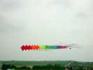
Les suisses ont aussi fait voler un train de 21 pilotables !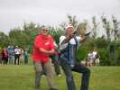
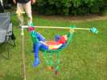